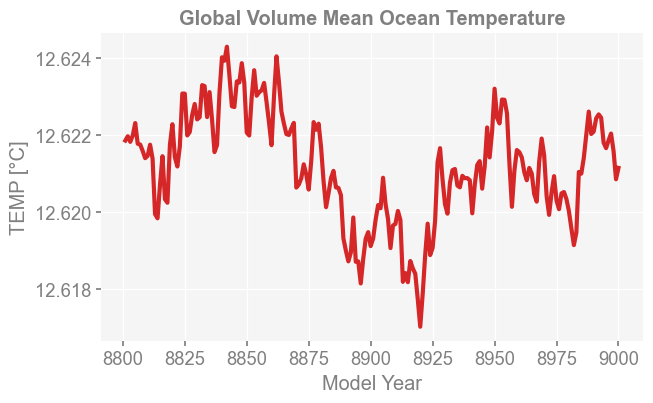
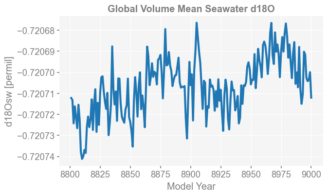

Visualizing Logs#
x4c has a Logs class to support convenient loading and visualizing log files. In this example, we show how to load and visualize the global volume mean ocean temperature and seawater d18O.
[4]:
%load_ext autoreload
%autoreload 2
import os
import x4c
import matplotlib.pylab as plt
import datetime
os.chdir('/glade/u/home/fengzhu/Github/x4c/docsrc/notebooks')
print(x4c.__version__)
print(f'Last Update: {datetime.date.today()}')
The autoreload extension is already loaded. To reload it, use:
%reload_ext autoreload
2026.3.9
Last Update: 2026-03-09
Load the specific variables from the log files#
[5]:
dirpath = './b.e13.B1850C5.ne16_g16.icesm131_d18O_fixer.Miocene.3xCO2.005/logs'
L = x4c.Logs(dirpath, comp='ocn', load_num=-10) # load the last 10 log files
L.get_vars(['TEMP', 'R18O'])
>>> Logs.dirpath: ./b.e13.B1850C5.ne16_g16.icesm131_d18O_fixer.Miocene.3xCO2.005/logs
>>> 10 Logs.paths:
Start: ocn.log.4591098.desched1.240524-190730.gz
End: ocn.log.4610617.desched1.240527-034410.gz
Global Volume Mean Ocean Temperature#
[6]:
x4c.set_style('web', font_scale=1.2)
fig, ax = plt.subplots(figsize=[7, 4])
ax.plot(L.df_ann.index, L.df_ann['TEMP'], color='tab:red', lw=3)
ax.set_ylabel('TEMP [°C]')
ax.set_xlabel('Model Year')
ax.set_title('Global Volume Mean Ocean Temperature', weight='bold')
[6]:
Text(0.5, 1.0, 'Global Volume Mean Ocean Temperature')

Global Volume Mean Seawater d18O#
[7]:
x4c.set_style('web', font_scale=1.2)
fig, ax = plt.subplots(figsize=[7, 4])
ax.plot(L.df_ann.index, (L.df_ann['R18O']-1)*1e3, color='tab:blue', lw=3)
ax.set_ylabel('d18Osw [permil]')
ax.set_xlabel('Model Year')
ax.set_title('Global Volume Mean Seawater d18O', weight='bold')
[7]:
Text(0.5, 1.0, 'Global Volume Mean Seawater d18O')

[ ]: